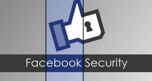
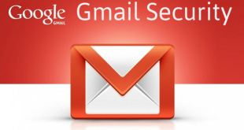

How to Secure your Facebook Accounts From Hackers

Activate ‘Login Approvals’
Login approvals is an extended security feature offered by Facebook, and it will require you to enter a security code each time you try to access your Facebook account from unrecognized devices. To activate Login Approvals, go to Account Settings > Security, look for Login Approvals and click on the Edit button.
An option to activate Login Approvals will appear, tick the check box to activate.A popup window will appear with descriptions of login approvals, click on the Set Up Now button to continue.
If you already register your mobile number, Facebook will automatically send you a code via SMS. Enter this code in the given box and click Submit Code.
Now you have completed with Login Approvals request, click Next to continue. Next, Facebook will offer you to setup a Code Generator from your mobile phone; this is useful in case you are unable to receive SMS. Click Continue.
Create Strong Password
Chances are, you already have your password created for Facebook however it is advisable for you to make sure your Facebook password is one of a kind and different from your other online accounts e.g. email, blog, hosting etc.
To change your password, go to Account Settings > General > Password.
Confirm your mobile number
Confirming your mobile number is one of many ways to enhance your account security on Facebook. This way, even when you lose or forget your password, Facebook will be able to send you a new one via SMS.
To add your mobile number, go to Account Settings > Mobile and click on Add a Phone.
Disconnect Previous Active Sessions
The good thing about Facebook is that it lets you know about your previous active sessions, where you login from, and what devices you used to access your Facebook account. Now to make sure your account is safe, from the Account Settings > Security page, look for ‘Active Sessions‘ and click on Edit. Now all previous sessions will be listed, together with the current active session at the top of the list. Click on the link ‘End Activity‘ to kill the activities from other devices.
Activate Private Browsing
Another way to prevent another person from accessing your account is by activating the ‘Private Browsing’ option from your browsers. All browsers have this private browsing option, and by activating this option, your activity will not be logged into the browsing history.
Safari :If you are using the Safari Browser on Mac, activate Private Browsing from the menu with Safari > Private Browing.
Firefox : For Firefox, go to Tools > Start Private Browsing.
Chrome : If you are using Chrome, there’s an option to browse using the Incognito window, it’s a version of Chrome window where all browsing activity will not be logged in. To open this window, go to File > New Incognito Window.
Don’t ‘Keep Me Logged In’
The moment you want to login to your Facebook account, at the Log In page, there’s a small checkbox that says Keep me logged in. Make sure this box is unchecked. Then, log in as usual. With this on, you will be asked for your email and password every time you launch Facebook.
Avoid Spam Links
Facebook is serious about spam and is always enhancing its features to make sure you are safe from being a victim to scams. The types of attacks include money scams through direct or indirect requests via Facebook messages, chat etc, phishing links that will redirect you to fake websites, malicious links that could retrieve your personal information or even harm your computer. There are also chances you may receive emails from ‘Facebook’ but it is actually from a phishing website, this modus operandi is part of a scam.
Sign Out after use
Lastly which is the most important of all (and definitely worth repeating), never forget to log out from your Facebook account.
Securing Your Gmail Account

GMail , Free Email from Google , is one of the most popular free email service . Almost everyone who is present online owns atleast one GMail email ID . Even though the GMail / Google take every effort to keep your Email accounts safe , the hackers still prey on Gmail ID’s by either phishing or by sending social engineering emails and are easily able to target the GMail Emails ID .
The Commons suffer from such attacks and end up loosing private data and email ID’s .